Control Center
One click from the menu bar.
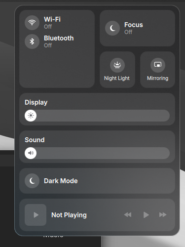
Clave 1.1.2
A complete desktop for Arch Linux. Tiling kept.


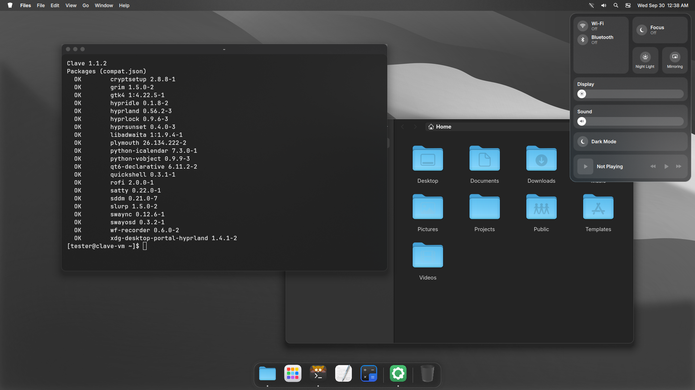

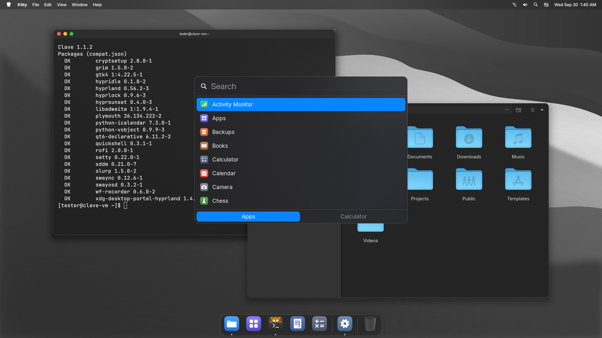
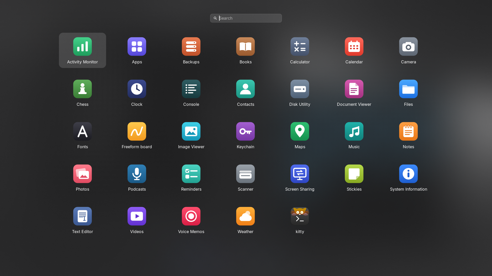
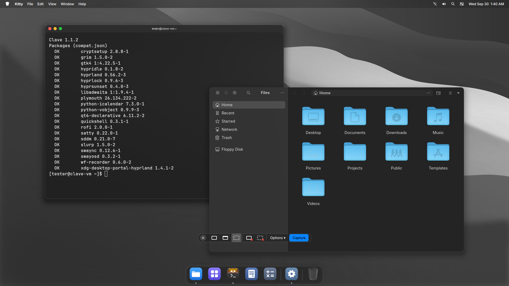
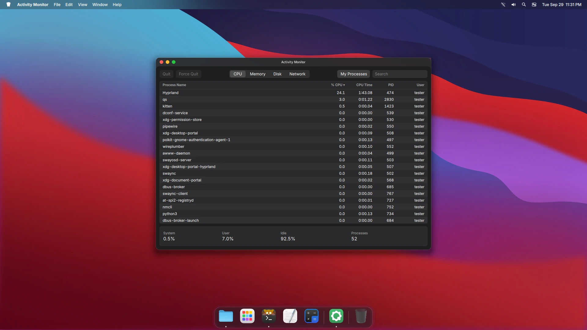
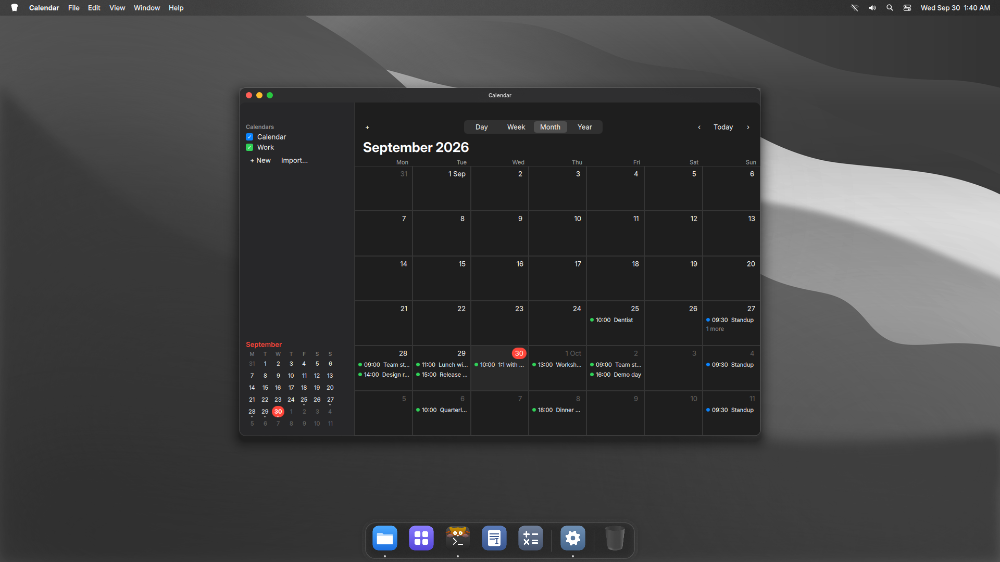
Built in. Drawn in one style. Off means off.
One click from the menu bar.

A pane for each part of the desktop.
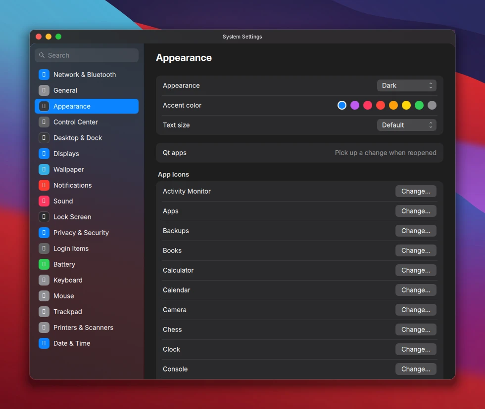
Pin what you use. Minimize with a genie effect.
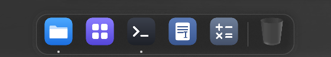
Press Print. Pick a screen, a window or an area.
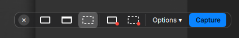
Plain Markdown files. Yours to keep.
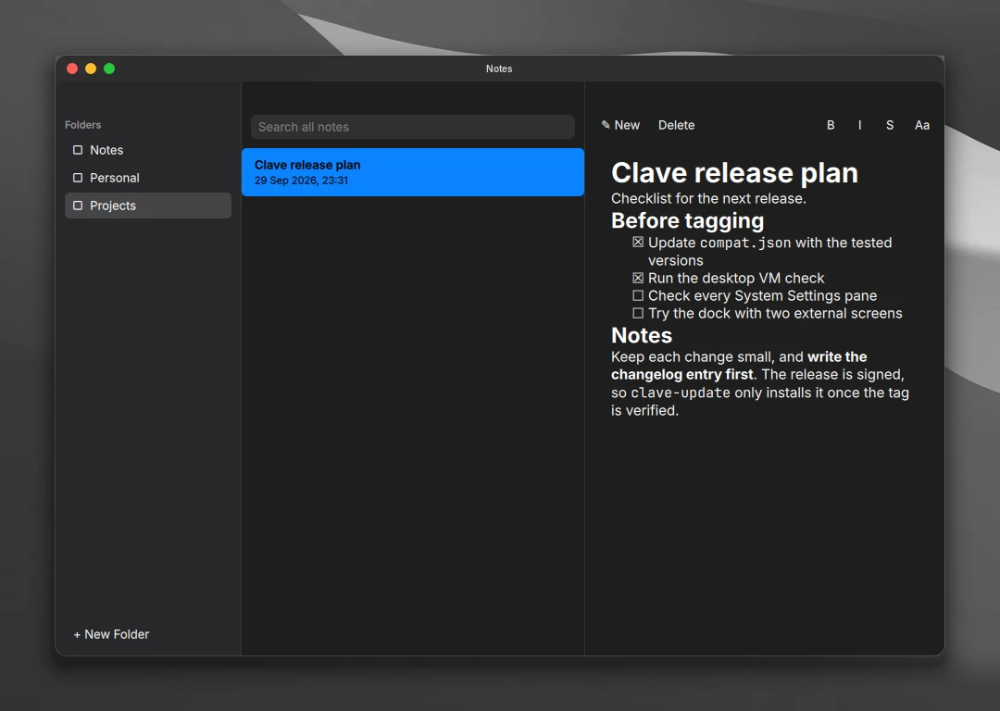
CPU, memory, disk and network at a glance.
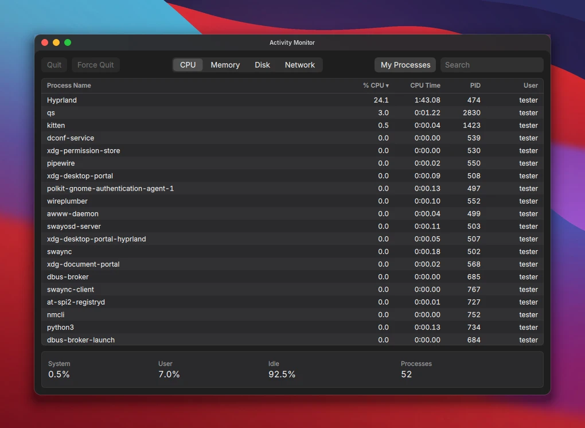
From the Arch repositories, with no background services. Only Weather, Maps and Podcasts go online, and only while open.
Files, Text Editor, Calculator, Notes, Calendar, Contacts, Reminders, Stickies, Weather, Clock, Maps, Photos, Books, Podcasts, Music, Videos, Voice Memos, Camera, Fonts, Chess, Freeform board, Scanner, Screen Sharing, Console, System Information, Disk Utility, Keychain, Backups and Activity Monitor.
Secure and quiet by default. Nothing to set up.
A firewall, AppArmor and a hardened kernel from the first install.
No accounts. It works offline, and online features stay off until you want them.
A feature you turn off starts nothing and uses no memory.
linux-hardened kernel with lockdown, IOMMU and init_on_free.apparmor.d, auditd and a sysctl lockdown.umask 027 and a noexec /tmp.arch-audit check.Good to know. USB devices you plug in later are blocked until you allow them. Three wrong passwords lock the account for 15 minutes. Skip it all with --no-harden.
Every release is signed, and clave-update installs only signed releases.
clave-doctor checks that Clave still works with what Arch installed. A pacman hook warns after an upgrade this release was not tested with.
Overview, Control Center, Apps, System Settings and Search.
Recorded in a virtual machine, so animations run slower than on real hardware.
An arch is built from stones that cannot stand on their own. The last stone goes in at the top. It locks the others in place, and the arch holds.
Arch Linux gives you the stones. A kernel, a compositor, a shell and a hundred good tools. Clave is the keystone that locks them into one desktop.
The keystone. The stone that holds an arch together.
A key. The thing that opens what you need.
The rhythm the whole band keeps time to.
The mark is a keystone. It comes in seven stones.
Inside, every part is named for what it does.
Nothing new to learn.
On Arch Linux, as your normal user.
bash <(curl -fsSL https://raw.githubusercontent.com/Andrew-most-likely/clave/main/setup.sh)
Then log out and choose Hyprland. The installer asks before it changes anything.
Preview every change with --dry-run first.
git clone https://github.com/Andrew-most-likely/clave ~/.local/src/clave cd ~/.local/src/clave ./install.sh --dry-run ./install.sh
--yes | No questions. Hardening is included. |
--no-harden | Skip the hardening. |
--extras | Also install the optional apps. |
--personal | Use fonts, a cursor and sounds you supply. |
--user-only | Only your home folder. No sudo. |
--dry-run | Show what would happen. Change nothing. |
Every file the installer replaced comes back. Packages stay installed.
~/.local/src/clave/uninstall.sh ~/.local/src/clave/uninstall.sh --system
The second line also removes the login screen, boot splash and hardening.
Press Super / for the rest.
It moves your old config aside to a dated backup and keeps your screens, wallpapers and Dock apps. uninstall.sh puts everything back.
~/.config/hypr/custom.lua for any Hyprland setting. The installer never replaces it.
Yes. Put an SVG at ~/.config/clave/branding/logo.svg.
Run clave-doctor, then open an issue on GitHub with its output and ~/.cache/clave/install.log.